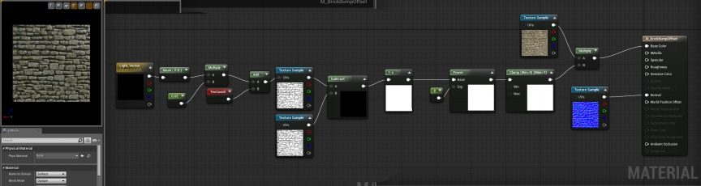
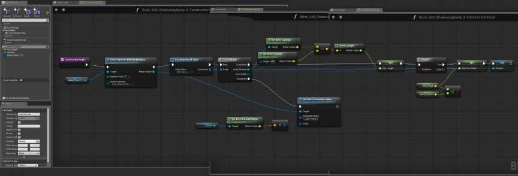

Self Shadowing Material
Overview
This Material uses a trick to generate a self shadowing effect on materials using a fake lighting vector created using a blueprint which looks for spotlights (in this example, can be changed to all light types or another specific type) and takes the closest spotlight and uses its forward vector to feed into the UV's of a Heightmap.
This material would be great for a very particular moment but would be costly to apply to all materials in your level.
Material

Notes
The 'Light Vector' in the Material is a Vector Parameter that I named after the actual Light Vector in the engine which due to the much better deferred rendering pipeline cannot be used in a material. Although not shown, the first part of the Material starting with the Light Vector to the Texture Sample of the Height Map serves the purpose of an offset. The Power node can be adjusted to the desired look as it is a contrast method. Finally the clamp insures that we do not get odd emissive artifacts in the final material.
Blueprint

Notes
The Blueprint components only include a simple plane with no pre-defined material. With some additions to the Material, you could search for more lights in a similar setup. Again, it would not be very performance-friendly at all though.
Full Project
Here is a link to the full project for dissection:
The final build for this project is built using the 4.6.0 . Unzip files into a new folder and double click the SelfShadowing.uproject file.